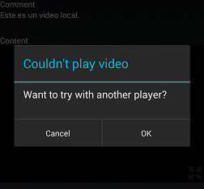
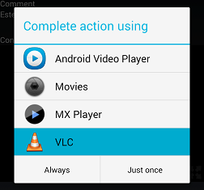

This document describes the functionality provided by the Native Video Player control in Android. This control is used whenever you use a variable or attribute of type Video in a layout.
1. A progress bar is first displayed while the video is pre-loaded.
2. Once the video is pre-loaded, the progress bar disappears showing a play button and a preview picture of the video (i.e. the first frame of the video).
3. The media controller bar appears when tapping on the video and hides after 3 seconds or when tapping on the video again.
4. It's also possible to watch the video in fullscreen by tapping the icon on the bottom right corner.
The video starts from the current position that's being played on fullscreen landscape mode.
The navigation bar is hidden on devices that support this feature (Android API >= 16).
The system bars and media controller are toggled on and off by tapping on the video.
If the video is not able to be played with Android's framework MediaPlayer, then a dialog is displayed informing that the video could not be played and asking the user to try with another video player app he/she might have installed. In that case, a list of available apps is displayed.
 
| Backlinks |
| Toc:Native Mobile Applications Development |
| Video data type |